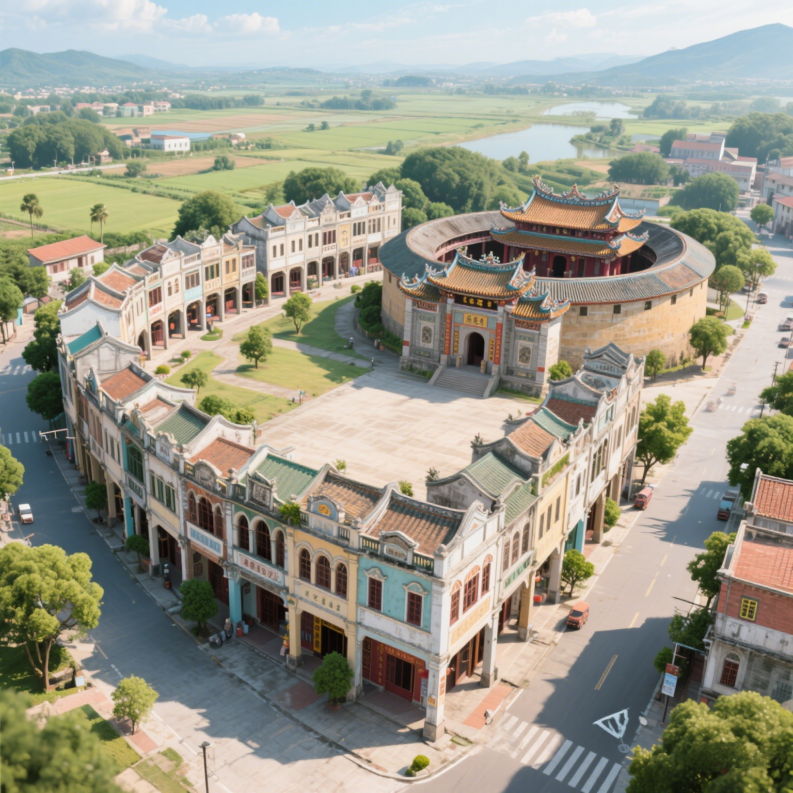
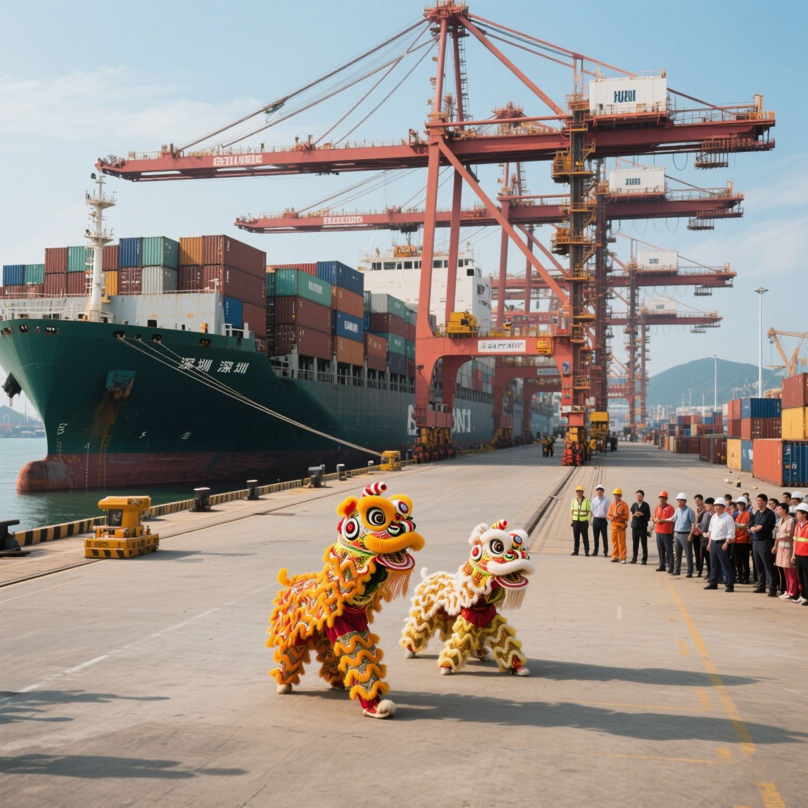
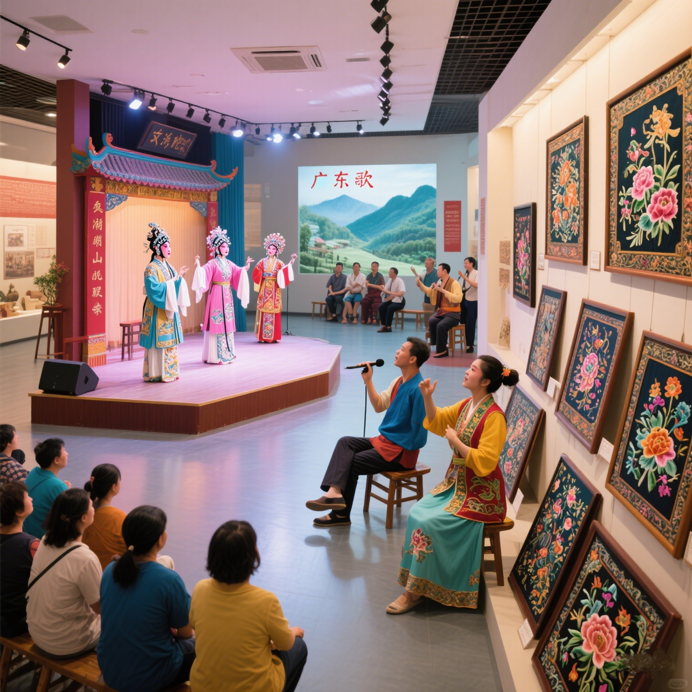

🌱 文化发展的核心脉络

融合创新
🔀 多元文化的现代交融
广东作为“海上丝绸之路”起点，自古是中原文化、百越文化、海外文化的交汇地。如今这种融合已渗透到生活的方方面面：
- 语言：粤语流行音乐（如陈奕迅、杨千嬅）通过流媒体走向全球，潮汕话短视频在海外潮人圈形成文化共鸣；
- 饮食：早茶从传统茶楼拓展到米其林餐厅（如广州白天鹅宾馆），潮汕牛肉火锅与分子料理结合诞生“新派潮菜”；
- 建筑：深圳“湾区之光”摩天轮下的骑楼街区，将南洋风格建筑与现代商业综合体无缝衔接。

向海而行
🌊 海洋文化的当代升华
海洋文化“开放、进取、兼容”的基因，在新时代被赋予新内涵：
• 经贸领域：粤港澳大湾区港口群年吞吐量超8000万标箱（全球第一），广交会从“卖产品”升级为“展文化”（如非遗手作展区）；
• 精神符号：深圳“拓荒牛”雕塑与传统醒狮“采青”仪式结合，成为“敢为人先”的文化图腾；
• 国际交流：“广东文化海外行”项目在30+国家举办，粤剧《南海十三郎》、潮绣《丝路绽放》等作品成为文化输出新名片。

和而不同
🎭 三大民系的活力传承
广府、潮汕、客家三大民系文化在保护中创新，焕发时代生机：
广府文化
粤剧引入3D投影技术（如《决战天策府》），广绣与LV、爱马仕合作推出限量款，传统“行花街”升级为“国潮花市”。
潮汕文化
工夫茶标准化冲泡流程成为“非遗体验课”热门内容，潮剧《观灯记》通过短视频平台播放量破亿，潮汕嵌瓷被应用于现代建筑装饰。
客家文化
围龙屋改造为“民宿+非遗工坊”（如梅州松口古镇），客家山歌与电子音乐融合的“新山歌”在B站收获百万粉丝。
✨ 新时代文化发展的核心特质
📱 数字赋能
广东数字文化产业规模全国第一（2023年超1.2万亿元），粤剧数字博物馆、3D版《清明上河图·粤韵》等项目推动传统文化“活起来”。
🌍 全球视野
从“广交会”到“大湾区国际影视展”，广东文化产品出口覆盖160+国家，形成“中国故事、湾区表达”的国际传播范式。
👫 全民参与
全省建成2.6万个基层文化服务中心，“非遗传承人工作室”“社区文化节”让文化发展从“政府主导”转向“全民共创”。